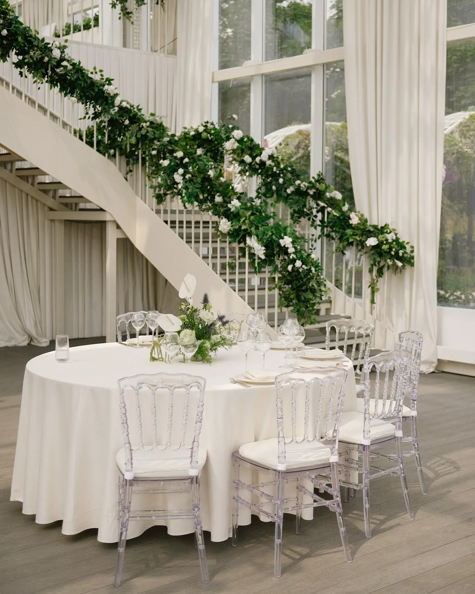

Свадьба в отеле удобна: зал, кухня, номера для гостей и сборов — в одном месте. Но банкетные залы отелей часто нейтральны и похожи друг на друга, а у самого отеля строгие правила монтажа. Оформление свадьбы в отеле превращает «зал на 100 гостей» в пространство конкретной пары. Рассказываем, какие зоны оформить, как работать с правилами отеля и из чего складывается смета.
Свадебный декор · смета за 24 часа
Хотите посчитать декор вашей свадьбы?
Расскажите о дате, площадке и числе гостей, пришлите референсы — предложим идею и посчитаем смету по позициям за 24 часа.
Свадебный декор FFP →Что входит в оформление
- Концепция и палитра под интерьер зала.
- Церемония — в зале, на террасе или в отдельном пространстве отеля.
- Банкет: президиум, гостевые столы, свет.
- Встреча гостей и навигация от лобби до зала.
- Монтаж и демонтаж по графику отеля.
Какие зоны оформить
- Лобби и путь к залу. Гости не всегда знают отель — навигация и композиция у входа в зал помогают и задают настроение.
- Лестница. Живая гирлянда по перилам — одна из самых фотогеничных деталей. Подробнее — в статье про оформление лестницы и входа на свадьбе.
- Церемония. Если она в том же зале — нужна перестановка между церемонией и банкетом; подробнее в статье про оформление зоны регистрации в зале.
- Президиум и столы. Главная работа декора в нейтральном зале.
- Номер для сборов. Небольшая композиция и детали для утренней съёмки — по желанию.

Как переиграть нейтральный зал
- Ткань: драпировка за президиумом или под потолком меняет пространство сильнее, чем цветы.
- Свет: свечи и тёплые гирлянды убирают «конференц-зал».
- Высота: высокие композиции на части столов создают ритм.
- Одна сильная точка — президиум или церемония — вместо ровного декора везде.
Подробнее — в статье про оформление зала на свадьбу.
Правила отеля
У отелей обычно строгие правила: время, когда зал свободен для монтажа, грузовой вход и лифт, ограничения на открытый огонь, крепления к стенам и потолку. Мы узнаём их у банкетного менеджера заранее и учитываем в проекте и смете.
Наши работы
Свадьбы в отеле в нашем портфолио пока нет — показываем приёмы из похожих задач: живая гирлянда на лестнице и белая флористика в светлом зале у Константина и Дарьи, белые цветы и свечи в тёмном зале у Дмитрия и Дианы. Все кейсы — в разделе «Кейсы».
Из чего складывается смета
- Число гостевых столов и размер президиума.
- Флористика, ткань, свечи и свет.
- Церемония и перестановка, если она в том же зале.
- Монтаж по графику отеля: короткое окно означает больше людей в команде.
Подробнее — в статье про стоимость оформления свадьбы.
Как заказать и сроки
Пришлите название отеля или фото зала, дату и число гостей, референсы — предложим идею и посчитаем смету по позициям за 24 часа. Правила отеля уточним у банкетного менеджера. Работаем в Москве и Подмосковье. Подробнее — в разделе «Свадебный декор».
Частые вопросы
Какие зоны оформить на свадьбе в отеле?
Путь от лобби до зала, лестницу, церемонию, президиум и гостевые столы; по желанию — номер для сборов.
Как оформить нейтральный банкетный зал отеля?
Тканью, тёплым светом и свечами, высокими композициями и одной сильной точкой — президиумом или церемонией.
Нужно ли согласовывать декор с отелем?
Да: время монтажа, грузовой вход, крепления и открытый огонь. Мы уточняем правила у банкетного менеджера заранее.
Можно ли провести церемонию в том же зале?
Да, с перестановкой между церемонией и банкетом — её планируем заранее.